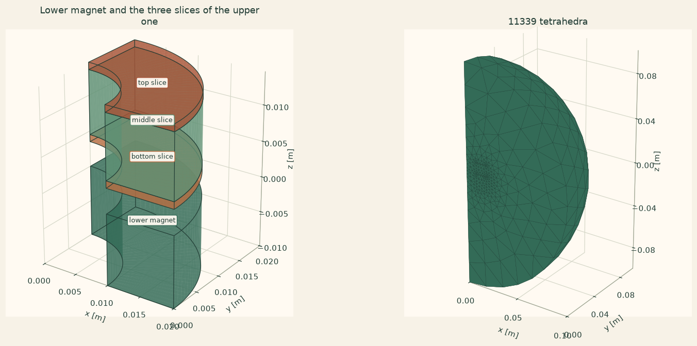

Docs › Examples › Magnetic force by virtual work and by the Maxwell stress tensor
Magnetostatics · 3D
Magnetic force by virtual work and by the Maxwell stress tensor
The repulsive force between the two ring magnets of a passive axial bearing, computed from the change of the field energy and from the Maxwell stress in the air gap.

What it computes
OneSimulation solves the 3D field of the rigid magnets with second-order Nedelec elements on one quarter read from STEP; the upper magnet is shifted by plus and minus 0.5 mm on one mesh that follows both positions, so that the energy difference gives the virtual-work force, while the Maxwell stress is integrated over a plane in the gap. Both are compared with the exact force of the equivalent surface currents. The script that builds the STEP files comes with the notebook.
What it checks
The virtual-work force of 108.61 N matches the exact 108.85 N to 0.22 %; the Maxwell-stress forces at 3.5 and 4.5 mm lie 2.6 and 2.4 % above the exact 120.39 and 98.78 N on the same mesh, so the energy method is the more accurate one here.
Geometry
The notebook starts at the import of the CAD files magnet_force_virtual_work_maxwell.step, magnet_force_virtual_work_maxwell_lower.step, magnet_force_virtual_work_maxwell_slice_bottom.step, magnet_force_virtual_work_maxwell_slice_middle.step, magnet_force_virtual_work_maxwell_slice_top.step: STEP (AP242), readable by any CAD program, with the names of the faces that the boundary conditions use. Put them next to the notebook.

The geometry script
The script magnet_force_virtual_work_maxwell_geometry.py builds the geometry with the CAD objects of OneSimulation and writes the files. Change a dimension there, run it, and run the notebook again.
"""Geometry of the OneSimulation example "Magnetic force by virtual work and by the Maxwell stress tensor".
Builds one quarter of the air around a pair of ring magnets with the CAD objects of OneSimulation:
a quarter of a ball of 100 mm radius (face groups planes and outer), written to
magnet_force_virtual_work_maxwell.step. The lower, fixed ring magnet (inner radius 10 mm, outer
radius 20 mm, 10 mm high, top face at z = 0) goes to magnet_force_virtual_work_maxwell_lower.step.
The upper ring is shifted by -0.5 mm and +0.5 mm about a 4 mm gap; to mesh both positions alike its
space is cut into three slices written to ..._slice_bottom.step (z = 3.5 to 4.5 mm),
..._slice_middle.step (4.5 to 13.5 mm) and ..._slice_top.step (13.5 to 14.5 mm).
"""
from onesim.cad.d3 import AnnularCylinder, Box, Sphere
mm = 1e-3
air, inner, outer, height, gap, shift = (
100 * mm,
10 * mm,
20 * mm,
10 * mm,
4 * mm,
0.5 * mm,
)
quarter = Box(length=air, width=air, height=2 * air, origin=(0.0, 0.0, -air)).named(
"cut"
)
region = Sphere(radius=air).named("ball") & quarter
faces = region.boundaries
region.grouped(
planes=faces["cut.x_min"] | faces["cut.y_min"],
outer=region.select(faces=lambda face: face.id.startswith("ball")),
).save("magnet_force_virtual_work_maxwell.step")
ring = (
lambda bottom, top: AnnularCylinder(
inner_radius=inner,
outer_radius=outer,
length=top - bottom,
origin=(0.0, 0.0, bottom),
)
& quarter
)
ring(-height, 0.0).save("magnet_force_virtual_work_maxwell_lower.step")
ring(gap - shift, gap + shift).save(
"magnet_force_virtual_work_maxwell_slice_bottom.step"
)
ring(gap + shift, gap + height - shift).save(
"magnet_force_virtual_work_maxwell_slice_middle.step"
)
ring(gap + height - shift, gap + height + shift).save(
"magnet_force_virtual_work_maxwell_slice_top.step"
)The notebook
The complete notebook, cell by cell. Run it to produce the figures and the comparison printout.
Two NdFeB ring magnets (inner radius 10 mm, outer radius 20 mm, 10 mm high, remanence \(B_r=1.2\) T) face each other with like poles across a gap of 4 mm and repel. The magnets are rigid, \(\mathbf B=\mu_0(\mathbf H+\mathbf M)\), and the vector potential solves \(\nabla\times(\mu_0^{-1}\nabla\times\mathbf A)=\nabla\times\mathbf M\). The force on the upper magnet is computed twice:
- Virtual work. The magnetic energy of rigid magnets is \(W=\frac{\mu_0}{2}\int H^2\,dV\) over all space; moving the upper magnet by \(\pm\delta\) (\(\delta=0.5\) mm) gives \(F_z=-\bigl(W(g+\delta)-W(g-\delta)\bigr)/(2\delta)\).
- Maxwell stress. The stress tensor \(T_{ij}=(B_iB_j-\tfrac12\delta_{ij}B^2)/\mu_0\) integrated over a plane in the gap gives \(F_z=\int(B_x^2+B_y^2-B_z^2)/(2\mu_0)\,dA\).
Both moved positions are solved on the same mesh: the space of the upper magnet is cut into three slices, and the magnet fills the lower two or the upper two. One quarter of the air, a quarter ball of 100 mm radius, comes from the CAD file magnet_force_virtual_work_maxwell.step (face groups planes, outer), the lower magnet from ..._lower.step and the slices from ..._slice_bottom.step, ..._slice_middle.step and ..._slice_top.step. The script magnet_force_virtual_work_maxwell_geometry.py builds them with the CAD objects of OneSimulation.
| face | condition | |---|---| | planes (through the axis), outer | \(\mathbf n\times\mathbf A=0\) |
Reference. Each ring is equivalent to two cylindrical current sheets \(\pm M\) on its outer and inner surface; the exact force follows from Maxwell's mutual inductance of coaxial loops, integrated over the sheets (Furlani, Permanent Magnet and Electromechanical Devices, Ch. 3). The central difference of the virtual work estimates the force at the gap \(g\); the mean of the two Maxwell-stress forces is compared with the mean of the exact forces at \(g\pm\delta\).
import numpy as np
from onesim.cad.d2 import Plane
from onesim.cad.exchange import load
from onesim.materials import VacuumPermeability
from onesim.meshing import LocalRefinement, TetrahedralMesher
from onesim.numerics import Numerics
from onesim.numerics.fem import FiniteElement, Nedelec
from onesim.numerics.linear import SparseDirect
from onesim.physics.magnetostatics import (
CoulombGauge,
MagneticInsulation,
MagneticVectorPotential,
MagnetizationContribution,
Magnetostatics,
SampledMagnetizationLoads,
curl_magnetization_load,
curl_space_magnetization_patches,
)
from onesim.results.integration import integrate_plane, mean_value, measure
from onesim.simulation import Problem, Simulation
from onesim.visualization import plots, theme
from scipy.special import ellipe, ellipk
theme.set()Geometry and mesh
The lower magnet and the three slices are embedded in the mesh of the air, so that the surfaces of the upper magnet in both positions are cell faces.
air, lower = load("magnet_force_virtual_work_maxwell.step"), load(
"magnet_force_virtual_work_maxwell_lower.step"
)
slices = [
load(f"magnet_force_virtual_work_maxwell_slice_{name}.step")
for name in ("bottom", "middle", "top")
]
faces = air.boundaries
outer, height = lower.size[0], lower.size[2]
inner = min(np.hypot(*vertex.position[:2]) for vertex in lower.vertices)
shift = slices[0].size[2] / 2
gap = slices[0].bounding_box[0][2] + shift
mesh = TetrahedralMesher(
target_size=0.02,
embedded_regions=(lower, *slices),
refinements=tuple(
LocalRefinement(region=region, target_size=0.0025)
for region in (lower, *slices)
),
size_field=lambda points: np.clip(
0.0025
+ 0.6
* np.maximum(
np.hypot(
np.hypot(points[:, 0], points[:, 1]) - 0.015, points[:, 2] - gap / 2
)
- 0.012,
0,
),
0.0025,
0.025,
),
).generate(air)
view = plots.Camera(elevation=25, azimuth=-55)
fig = plots.figure(1, 2, size=(14, 6))
plots.geometry(
[
lower.named("lower magnet"),
*(
piece.named(f"{name} slice")
for piece, name in zip(slices, ("bottom", "middle", "top"))
),
],
camera=view,
title="Lower magnet and the three slices of the upper one",
ax=fig[0],
)
plots.mesh(
mesh,
groups=("all",),
legend=False,
camera=view,
title=f"{mesh.cell_count} tetrahedra",
ax=fig[1],
)
plots.show()Model
The magnetisation is \(+M\hat{\mathbf z}\) in the lower ring and \(-M\hat{\mathbf z}\) in the upper ring, which starts at \(g-\delta\) or at \(g+\delta\).
mu0 = float(VacuumPermeability().evaluate())
magnetisation = 1.2 / mu0
ring = (
lambda points, bottom: (
(np.hypot(points[:, 0], points[:, 1]) - inner)
* (np.hypot(points[:, 0], points[:, 1]) - outer)
< 0
)
& (points[:, 2] > bottom)
& (points[:, 2] < bottom + height)
)
positions = (gap - shift, gap + shift)
models = {
g: Magnetostatics(
domain=air.volume,
permeability=VacuumPermeability(),
formulation=MagneticVectorPotential(gauge=CoulombGauge()),
magnetization_provider=MagnetizationContribution(
(
lambda g: lambda points, time: magnetisation
* np.column_stack(
(0 * points[:, :2], ring(points, -height) * 1.0 - ring(points, g))
)
)(g),
SampledMagnetizationLoads(
curl_space_magnetization_patches,
lambda points, data, field_offset, context: field_offset(
points, context.time
),
curl_magnetization_load,
),
),
)
for g in positions
}
numerics = Numerics(
spatial=FiniteElement(element=Nedelec(order=2)), linear_solver=SparseDirect()
)
results = {
g: Simulation(
problem=Problem(
name="Magnet pair",
geometry=air,
physics=(model,),
boundary_conditions=(
MagneticInsulation(boundary=faces.planes | faces.outer, physics=model),
),
),
mesh=mesh,
numerics=numerics,
).solve_stationary()
for g, model in models.items()
}Results
The energy \(\frac{\mu_0}{2}\int H^2dV\) from mean_value and measure, the Maxwell stress on the plane halfway across the narrower gap from integrate_plane, four times the quarter each.
strength = {g: results[g].field(models[g].magnetic_field_strength) for g in positions}
induction = {g: results[g].field(models[g].magnetic_flux_density) for g in positions}
energy = {
g: 4
* mu0
/ 2
* mean_value(H, component=lambda H, position: (H**2).sum(axis=1))
* measure(H)
for g, H in strength.items()
}
stress = lambda B, position: (B[:, 0] ** 2 + B[:, 1] ** 2 - B[:, 2] ** 2) / (2 * mu0)
maxwell = {
g: 4
* integrate_plane(
B, Plane(origin=(0, 0, positions[0] / 2), normal=(0, 0, 1)), component=stress
).value
for g, B in induction.items()
}
virtual = -(energy[positions[1]] - energy[positions[0]]) / (2 * shift)
nodes, weights = np.polynomial.legendre.leggauss(48)
pair = np.outer(weights, weights) * (height / 2) ** 2
mutual = lambda a, b, z: (
lambda k: mu0
* np.sqrt(a * b)
* ((2 / k - k) * ellipk(k * k) - 2 / k * ellipe(k * k))
)(np.sqrt(4 * a * b / ((a + b) ** 2 + z**2)))
separation = (
lambda g: (g + height / 2 + height / 2 * nodes)[None, :]
- (-height / 2 + height / 2 * nodes)[:, None]
)
exact = lambda g: sum(
s1
* s2
* magnetisation**2
* np.sum(
pair
* (mutual(a, b, separation(g) + 1e-8) - mutual(a, b, separation(g) - 1e-8))
/ 2e-8
)
for a, s1 in ((outer, 1), (inner, -1))
for b, s2 in ((outer, -1), (inner, 1))
)
mean_exact = (exact(positions[0]) + exact(positions[1])) / 2
print(
f"magnetic energy: {energy[positions[0]]:.6f} J at g - delta, {energy[positions[1]]:.6f} J at g + delta"
)
print(
f"virtual work, force at g = {1e3 * gap:.0f} mm: {virtual:9.4f} N exact {exact(gap):9.4f} N ({100 * (virtual / exact(gap) - 1):+.2f} %)"
)
for g in positions:
print(
f"Maxwell stress at g = {1e3 * g:.1f} mm: {maxwell[g]:9.4f} N exact {exact(g):9.4f} N ({100 * (maxwell[g] / exact(g) - 1):+.2f} %)"
)
print(
f"mean of the two Maxwell forces: {np.mean(list(maxwell.values())):9.4f} N mean exact {mean_exact:9.4f} N"
)
print(
f"virtual work against the mean Maxwell force: {100 * (virtual / np.mean(list(maxwell.values())) - 1):+.2f} %; "
f"exact force at g against the exact mean: {100 * (exact(gap) / mean_exact - 1):+.3f} %"
)Figure
The Maxwell stress on the plane in the gap and the field strength through the axis.
fig = plots.figure(1, 2, size=(16, 6))
plots.section(
induction[positions[0]],
plane=Plane(origin=(0, 0, positions[0] / 2), normal=(0, 0, 1)),
component=lambda B, position: stress(B, position) / 1e3,
contours=10,
subdivisions=2,
symmetry={"planes": [((1, 0, 0), (0, 0, 0)), ((0, 1, 0), (0, 0, 0))]},
label="Maxwell stress [kPa]",
xlimits=(-0.03, 0.03),
ylimits=(-0.03, 0.03),
xlabel="x [m]",
ylabel="y [m]",
title="Stress pushing the magnets apart",
ax=fig[0],
)
plots.section(
strength[positions[0]],
plane=Plane(origin=(0, 1e-6, 0), normal=(0, 1, 0)),
component=lambda H, position: np.linalg.norm(H, axis=1) / 1e3,
limits=(0, 700),
contours=8,
subdivisions=2,
symmetry={"planes": [((1, 0, 0), (0, 0, 0))]},
label="|H| [kA/m]",
xlimits=(-0.04, 0.04),
ylimits=(-0.025, 0.03),
xlabel="x [m]",
ylabel="z [m]",
title="Field strength, whose energy is W",
ax=fig[1],
)
plots.show()Going further
Halve the shift in magnet_force_virtual_work_maxwell_geometry.py and the central difference approaches the force at the gap itself; move the stress plane away from the middle of the gap to see that the Maxwell force does not depend on where the plane lies; or tilt the upper magnet and compute a torque.